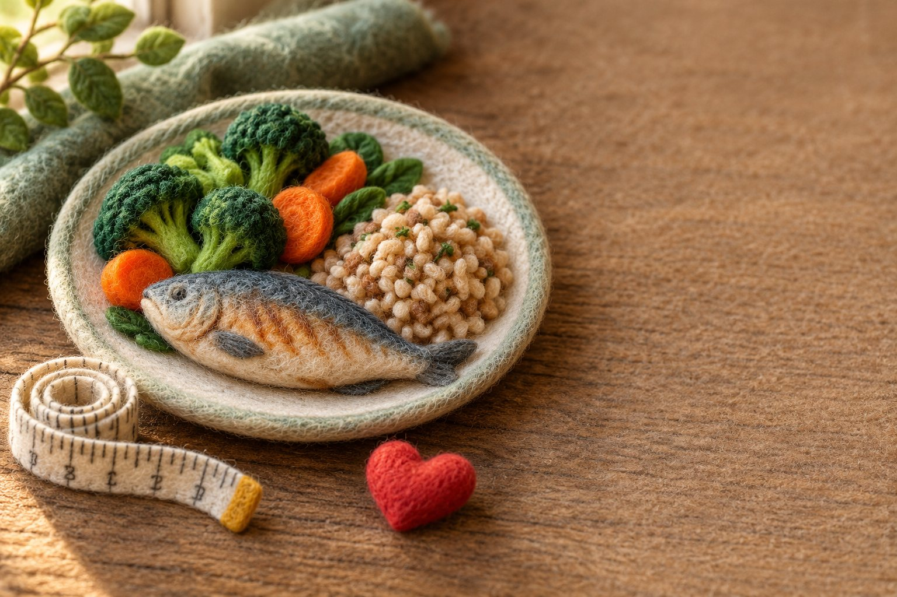

高血壓、肥胖與心腎症候群：心腎代謝專區
血壓、體重、血糖和腎臟，任何一個沒顧好，最後都會算到心臟頭上。這個專區把它們放在一起講。

重點摘要
血壓長期偏高、體重過重、血糖和血脂失控，都會讓心臟和血管提早老化，心臟和腎臟更會互相拖累。我參與撰寫台灣心臟學會與台灣腎臟醫學會 2026 年的心腎症候群專家共識，同時參與即將發表的肥胖指引與高血壓指引。
我參與撰寫的台灣學會指引與共識
- 2026心腎症候群專家共識台灣心臟學會・台灣腎臟醫學會｜第一部分，Acta Cardiologica Sinica 已接受刊登看衛教文章 →
- 2025高心血管風險成人疫苗接種共識
- 2024心衰竭指引（射出分率保留型）台灣心臟學會
- 2024動脈粥樣硬化心血管疾病初級預防指引
- 2023心衰竭藥物治療共識台灣心臟學會
- 2023慢性冠心症指引台灣心臟學會
- 即將發表肥胖指引參與撰寫
- 即將發表高血壓指引參與撰寫
高血壓
多少算高、在家怎麼量、可不可以運動，吃藥仍降不下來時還有哪些選擇。
- 高血壓標準值是多少？130/80 要吃藥嗎2022 年台灣指引以居家血壓平均 130/80 mmHg 以上診斷高血壓，一般治療目標是低於 130/80；血壓藥的目的是降低中風與併發症風險。→
- 在家怎麼量血壓才準？722 原則與量測步驟選血壓較高的那隻手、量前 30 分鐘不喝咖啡茶並先排尿、坐有靠背的椅子休息 5 分鐘，再依 722 原則連續量 7 天。→
- 高血壓可以運動嗎？血壓多高要先控制高血壓可以運動，規律運動本身就是降壓的一部分；但靜態收縮壓大於 160 mmHg、血壓還沒控制時，不建議做高強度運動，要先用藥物把血壓控制好。→
- 頑固型高血壓怎麼辦？腎動脈交感神經電燒是什麼腎動脈交感神經電燒是用導管降低腎動脈周圍交感神經活性的治療，只用在已經吃多種降壓藥、血壓仍降不下來的頑固型高血壓，而且要經過團隊評估。→
肥胖與代謝
體重、血糖、膽固醇和心臟的關係，以及什麼時候該吃藥。
心臟與腎臟
心臟和腎臟怎麼互相拖累，水腫、體重增加、容易喘要注意什麼。
週二下午14:00–17:00週三上午09:00–12:00週四上午09:00–12:00週四夜診17:30–20:30
桃竹苗就近看診：#桃園#中壢#楊梅#新屋#龍潭#新竹市#竹北#竹東#湖口#新豐#寶山#芎林#竹南#頭份#苗栗